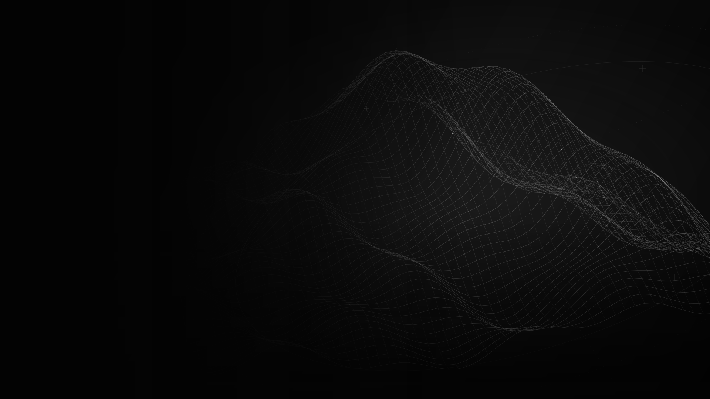

/0.1
Defense
Define defense timings, target filters, and response sequences. Keep selected PvP moves in your hands.
TIMINGS / RESPONSE POLICY
Read the environment. Define the response.
Combat, world awareness, and session control in one interface.
Connect what you see with how you act. Palantir brings the tools for your Deepwoken session into one configurable system.
Explore the consoleDefine defense timings, target filters, and response sequences. Keep selected PvP moves in your hands.
TIMINGS / RESPONSE POLICYBring players, NPCs, items, and world markers into view. Set the labels, ranges, and indicators that matter.
WORLD VISUALS / ESPManage supported farming and progression routes with visible status and direct stop or retry controls.
ROUTES / PROGRESSIONMaintain named local profiles and themes. Load a global configuration or assign a setup to each place.
PROFILES / THEMESInspect frame times, callback activity, and defense traces. Understand behavior and refine your configuration.
PERFORMANCE / TRACESSelect servers by population, rejoin your session, and monitor the progress of a transfer.
SERVERS / REJOINExplore the working browser demonstration.
Search the settings. Examine the controls.
Explore the Palantir console. A browser demonstration of the Lua interface, its controls, and configuration.
A clear view of the environment. Explicit controls for how you respond.
Choose enabled features, set response filters, and keep selected moves manual.
Review status reports and diagnostic traces. Refine your configuration as conditions change.
Source, documentation, and release checks.
Available through the project repository.
Review the source and documentation on GitHub. An account with repository access is required.
View repositoryRun the release build from a complete checkout. It runs the project checks and generates the Palantir Lua bundle.
Build instructionsSelect the features you need, review their settings, and save a profile for your next session.
Read the briefingWith Node.js installed and the complete repository checked out, run this from the repository root. The project's build documentation describes its bundled tools and platform requirements.
node palantir-main/.vscode/palantir.js build --mode releaseOutput: palantir-main/output/release/palantir.lua
The current project targets Deepwoken. This site describes the toolkit as it exists today; additional game support is not promised.
The interface above is a browser-only demonstration. It does not connect to Roblox, change your game, or save your real Palantir settings. Palantir runs separately in its supported environment.
Yes. Palantir supports named local configurations, custom themes, and global or place-specific autoload. Saving a configuration is manual.
The Timing Builder supports custom sequences. Reload Timings refreshes the timing catalog. Target filters and manual-only move selections give you more control over when assistance is used.
Results vary with your device, the scene, and enabled features. The release build runs automated checks and Luau validation; the built-in performance reports help investigate behavior in a live session.
The project repository is private. Sign in with a GitHub account that has access to view its source and documentation. This website does not grant repository access.